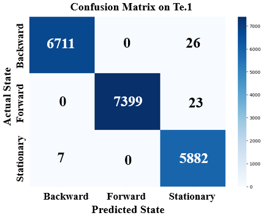
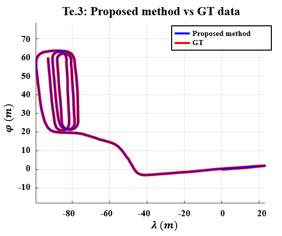

내부 제어기에 연결하지 않고 외부 센서만으로 상태 판별
과학기술정보통신부 국가 R&D , OFF-ROAD NAVIGATION
IMU 기반 LSTM-FSM 주행상태 판별
기어, 브레이크, 차량 CAN 신호를 사용할 수 없는 반자율주행 트랙터에서 IMU 시계열만으로 전진, 후진, 정지를 판별한 항법 모듈. LSTM의 순간 예측에 FSM 상태전이 규칙을 결합해 실차 진동과 상태전환 오분류를 억제.
- 담당
- LSTM 학습, FSM 설계, ROS 통합, 실차검증
- 기술
- IMU , LSTM , FSM , ROS , Kalman Filter
- 실험
- 농로와 농지, 세 실차 경로
- 성과
- 평균 후진 F1 99.52%, SCIE 공동저자
01 / CONSTRAINT
판별이 필요한 이유
항법 시스템은 트랙터가 정지했는지, 전진을 시작했는지, 후진을 시작했는지 알아야 했다. 그러나 차량 내부의 기어, 브레이크, CAN 신호를 받을 수 없었다. 후진을 전진으로 판단하면 초기 진행방향이 반대로 잡히고, 정지를 놓치면 움직이지 않는 동안에도 관성오차가 누적된다. 추가 센서 없이 기존 IMU만으로 전진, 후진, 정지를 판별한 이유다.
비용과 시스템 변경을 줄이기 위해 기존 IMU 데이터만 사용
임계값 기반 정지 검출이 지면 조건에 따라 불안정
한 시점의 가속도만으로 진행방향 직접 구분 곤란
02 / OBSERVATION
상태전환에서 찾은 단서

- 등속 구간가속도와 각속도 파형의 중첩으로 방향 판별 근거 부족
- 출발 구간전진 시작과 후진 시작의 x축 가속도 부호 차이 확인
- 문제 재정의현재 파형 분류가 아닌 상태전환 시퀀스 인식으로 전환
03 / DESIGN
LSTM-FSM 결합

전진과 후진은 등속 구간의 파형만으로 구분하기 어렵다. LSTM이 출발 순간의 시간 패턴을 찾고, FSM이 그 이벤트를 이후의 지속 상태로 유지하도록 역할을 분리했다.
04 / FIELD TEST
실차 실험


05 / CLASSIFICATION
분류 결과
99.52%
세 실차 경로 평균 후진 F1
LSTM-FSM 기준. 농로와 농지의 실제 주행 진동을 포함한 결과


논문에 수록된 세 실차 경로의 후진 F1을 산술평균한 값.
06 / OWNERSHIP
담당 범위
- 데이터IMU 전처리, 학습 시퀀스 구성, 주행상태 라벨 정의
- 모델LSTM 구조 선정과 학습, 비교 분류기 평가
- 판단전진, 후진, 정지 FSM 전환 규칙 설계
- 통합ROS 기반 분류결과와 항법 모듈 연결
- 검증농로와 농지 세 실차 경로 평가
07 / PAPER
연구 성과
Measurement 278A novel navigation system using driving state classification algorithm for semi-autonomous tractors2026, 공동저자 2/6
ICROS 2024주행상태 판별 알고리즘 기반 반자율 트랙터 항법 연구구두발표, 공동저자 2/5